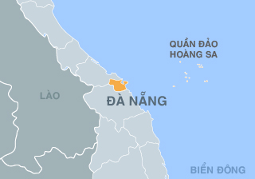

| BÀ NÀ HILL:Thắng cảnh này nằm trên núi Chúa, ở độ cao 1.489 m so với mực nước biển, cách trung tâm thành phố khoảng 25 km, thuộc địa phận xã Hòa Ninh, Hòa Vang, . Đầu thế kỷ XX, Bà Nà đã được quân đội Pháp phát hiện trong khi tìm kiếm khu nghỉ mát mới.Với khí hậu mát mẻ, nhiệt độ trung bình chỉ 18 độ C, nơi đây phù hợp cho du khách tận hưởng bầu không khí trong lành và ngắm cảnh quan từ trên cao xuống. Ngoài ra, đỉnh Bà Nà còn có khu làng Pháp với kiến trúc đậm chất phương Tây, bên trong có các trò chơi giải trí hấp dẫn. Năm 2006, hệ thống cáp treo lên Bà Nà bắt đầu được xây dựng, khi hoàn thành đã thu hút rất đông du khách đến đây. Ảnh:sưu tầm |

|
Bên cạnh đó, các cây xanh, bồn hoa đủ màu sắc ở Bà Nà cũng là địa điểm được khách du lịch dừng chân để lưu lại những kỷ niệm đẹp. Trung tâm của đỉnh Bà Nà là khách sạn Morin được xây dựng từ đầu thế kỷ XX, vườn hoa tình yêu Le Jardin d’Amour rộng 7 ha. Năm 2004, chùa Linh Ứng với tượng phật Đức Bổn Sư cao 27 m được hoàn thành tạo một điểm đến tâm linh cho du khách khi lên Bà Nà. Hiện nay, đỉnh cao nhất của Bà Na có Lĩnh Chúa Linh Từ, lầu chuông, miếu Bà, nhà bia, tháp Phong Linh là điểm đến mới được xây dựng. Ảnh: sưu tầm |

| BÁN ĐẢO SƠN TRÀ:Đây được xem là "lá phổi xanh" của thành phố Đà Nẵng. Địa điểm này thuộc phường Thọ Quang, quận Sơn Trà. Với diện tích 4.439 ha, bán đảo Sơn Trà có hệ động, thực vật phong phú và được bảo tồn nguyên vẹn. Cung đường dẫn lên Sơn Trà từ trung tâm thành phố uốn quanh bờ biển, ôm lấy rìa bán đảo này. Ảnh: sưu tầm. |

|
Khi đến bán đảo Sơn Trà, bạn sẽ được thăm tượng Phật Bà Quan Âm cao 67 m hướng ra biển. Ở đây có những đỉnh núi cao gần 700 m nên du khách có thể ngắm toàn cảnh thành phố từ xa và dải bờ biển uốn cong với cát trắng kéo dài. Khi đi theo đường ở phía Nam bán đảo, du khách sẽ được đến với đỉnh Bàn Cờ. Những cung đường quanh co, rợp bóng cây xanh với không khí trong lành của Sơn Trà luôn hấp dẫn bất cứ du khách nào thích phượt. Ngoài ra, bạn cũng có thể ghé các bãi biển xung quanh Sơn Trà như bãi Bụt, bãi Xếp, bãi Con, Tiên Sa, Đá Đen...
Ảnh: sưu tầm. |

| NGŨ HÀNH SƠN:Danh thắng này nằm cách trung tâm Đà Nẵng 8 km về phía Đông Nam, gồm 6 ngọn núi đá vôi là: Kim Sơn, Mộc Sơn, Thủy Sơn, Hỏa Sơn (2 ngọn) và Thổ Sơn. Du khách đến Ngũ Hành Sơn có thể cảm nhận được vẻ đẹp của mây trời non nước, tìm hiểu các giá trị văn hóa tâm linh, lịch sử. Ảnh: sưu tầm. |

|
Thủy Sơn là ngọn núi cao nhất với chiều cao 106 m, ở đây có nhiều chùa, động thu hút rất đông du khách tham quan. Thủy Sơn có chùa Linh Ứng, Tam Tâm, Tam Thai, Từ Tâm. Trong đó, Tam Thai là chùa cổ nhất có các di tích như vọng giang đài, vọng hải đài, động Hoa Nghiêm, động Huyền Không... Nếu không leo bộ theo các bậc thang, bạn có thể chọn hệ thống thang máy cao 43 m đưa du khách lên núi.Sau khi tham quan Ngũ Hành Sơn, bạn nên đến thăm làng đá mỹ nghệ Non Nước. Đây là nơi nổi tiếng với những sản phẩm được chế tác từ đá rất tinh xảo và đẹp mắt. Ảnh: sưu tầm. |

| BIỄN MỸ KHÊ:Tháng 7/2013, biển Mỹ Khê được Tạp chí:bình chọn là một trong 6 bãi biển quyến rũ nhất hành tinh. Bãi biển này có chiều dài khoảng 900 m, sở hữu bãi cát phẳng, mức sóng phù hợp để tắm và chơi các môn thể thao trên biển. Ngoài ra, Mỹ Khê nằm không quá xa trung tâm, giao thông thuận tiện cho du khách đi lại. Ảnh: sưu tầm. |

|
Nếu bạn đến Mỹ Khê vào ngày nắng đẹp, nước biển sẽ có màu xanh ngắt. Khi hoàng hôn buông xuống, cảnh biển yên tĩnh hơn phù hợp để nằm nghỉ ngơi, thư giãn. Với các gia đình có trẻ em cùng đi du lịch, phụ huynh có thể cho bé chơi các trò chơi trên bãi biển, làm lâu đài cát... Bãi biển Mỹ Khê có các bãi tắm gồm: bãi tắm Phạm Văn Đồng, bãi tắm T20 và bãi tắm 1,2,3 để du khách lựa chọn. Ảnh: sưu tầm. |

| CÁC CÂY CẦU ĐÀ NẴNG:Đà Nẵng không chỉ có những phong cảnh tự nhiên đẹp mà còn nổi tiếng với những cây cầu bắc qua sông Hàn. Khung cảnh của thành phố càng trở nên ấn tượng khi lên đèn. Du khách có thể mua vé đi du thuyền trên sông Hàn để ngắm các cây cầu được chiếu sáng nhiều màu sắc, gồm: cầu Thuận Phước, cầu Rồng, cầu Sông Hàn, cầu Tiên Sơn... Mỗi chuyến đi du thuyền kéo dài một tiếng, du khách vừa được ngắm cảnh và tận hưởng làn gió mát trên sông, ghi lại được những bức ảnh đẹp của cảnh quan hai bên bờ. Đặc biệt, vào dịp cuối tuần, cầu Rồng sẽ phun lửa và nước thu hút sự chú ý của du khách. Ảnh: sưu tầm. |

| ĐÈO HẢI VÂN:Địa điểm này là ranh giới tự nhiên giữa tỉnh Thừa Thiên - Huế và thành phố Đà Nẵng. Du khách lên đèo Hải Vân sẽ được ngắm thiên nhiên rộng lớn với núi non trùng điệp, những rừng cây trải màu xanh bên cung đường uốn lượn. Từ đèo Hải Vân, bạn có thể ngắm nhìn thành phố Đà Nẵng, cảng Tiên Sa,... hoặc hướng mắt sang địa phận của Thừa Thiên - Huế. Ảnh: sưu tầm. |

|
Từ khi hầm đường bộ qua đèo Hải Vân được xây dựng, cung đường đèo này ít phương tiện giao thông qua lại hơn. Cho nên, nơi đây trở thành địa điểm hấp dẫn các phượt thủ thích trải nghiệm bằng xe máy. Bạn có thể đợi đến chiều tối để ngắm hoàng hôn trong nhiệt độ khoảng 20 độ C. Ảnh: sưu tầm. |

| TRÒ CHƠI Ở ASIA PARK:Trải rộng trên diện tích 868.694 m2 bên bờ Tây sông Hàn, công viên Châu Á - Asia Park Đà Nẵng là sự kết hợp những nét độc đáo, mới lạ của các mô hình giải trí trên thế giới với những nét văn hóa đặc sắc đậm chất Á Đông. Hiện tại các hạng mục vui chơi, giải trí của công viên đã đi vào hoạt động và thu hút rất nhiều du khách khi đến du lịch Đà Nẵng. Hãy cùng Dranahotel khám phá tất tần tật về các khu vui chơi tại đây nhé ! Asia Park bao gồm ba khu vực chính: công viên giải trí ngoài trời hiện đại, công viên văn hóa với các công trình kiến trúc và nghệ thuật thu nhỏ mang tính biểu trưng của 10 quốc gia châu Á, và khu Sun Wheel - nơi giao thoa giữa nét hiện đại và truyền thống. Ảnh:sưu tầm |
Đà Nẵng
Đà Nẵng là một thành phố thuộc trung ương từ năm 1997, là trung tâm kinh tế, tài chính, chính trị, văn hoá, du lịch, xã hội, giáo dục, đào tạo, khoa học và công nghệ, y tế chuyên sâu của khu vực miền Trung - Tây Nguyên và cả nước.
Bạn có biết: Nguồn gốc từ "Đà Nẵng" là biến dạng của tiếng Chăm cổ daknan, nghĩa là vùng nước rộng lớn hay "sông lớn", "cửa sông cái".
- Diện tích: 1.285km2
- Dân số: 1,347 triệu (2016)
- Phân chia hành chính: 6 quận, 2 huyện
- Vùng: Nam Trung Bộ
- Mã điện thoại: 236
- Biển số xe: 43